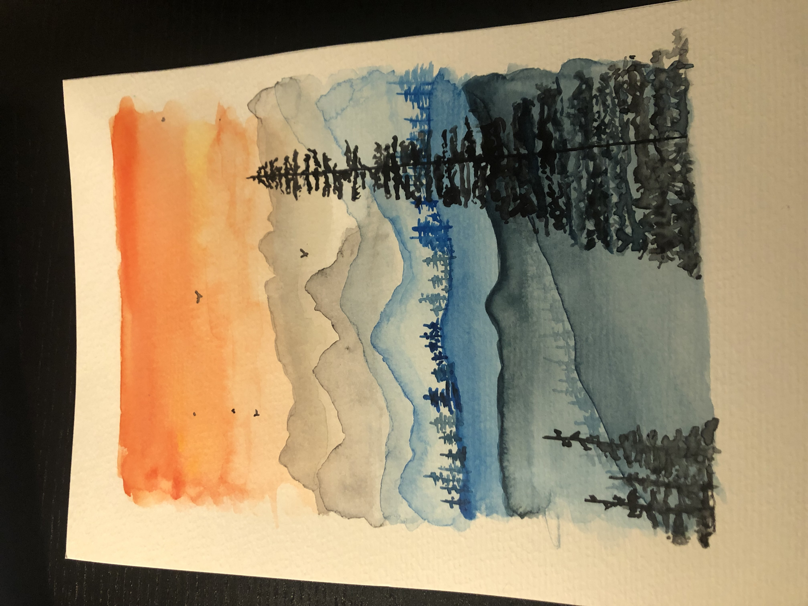
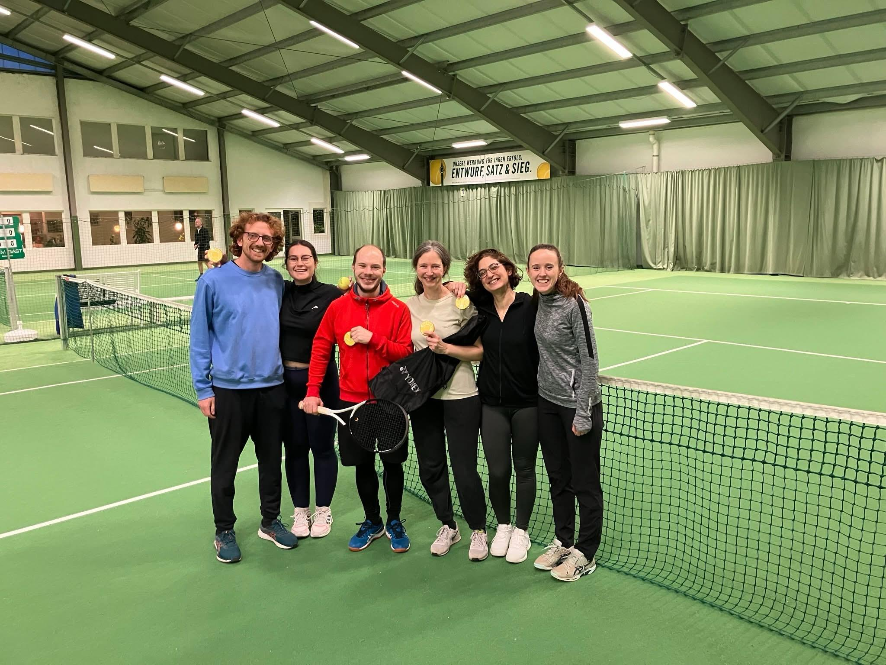

About Me
Hello! I am Aybuge Altay, a researcher in bioinformatics and computational biology, passionate about leveraging data to uncover insights into complex biological systems.
I have obtained my PhD in bioinformatics.
My research focus include:
- Bioinformatics and Computational Biology: Application and development of algorithms for data analysis
- Single-Cell Genomics: Techniques for cell-type annotation and data integration in single-cell ATAC-seq and RNA-seq data
- Machine Learning in Disease Models: Using machine learning methods like Bayesian networks for cancer and multi-omics data analysis
- Gene Regulation: Understanding and analyzing gene regulation through transcriptomics and epigenomics data
- Data Integration and Analysis: Large-scale data management and integration across multiple biological data types
Experience
-
Feb 2019 - Present

Research Assistant
Max Planck Institute for Molecular Genetics - Berlin, DE
- Developed a Python package, "scATAcat," for cell-type annotation in single-cell ATAC-seq data
- Implemented and evaluated various cell-type annotation methods in scATAC-seq and scRNA-seq data using diverse datasets
- Collaborated with experimental scientists to answer specific biological questions using computational analysis
- Maintained uniform data processing pipelines for NGS technologies and ensured compliance with FAIR principles
-
Oct 2015 - Dec 2018
Research Assistant
Fraunhofer SCAI - Sankt Augustin, DE
- Developed a Bayesian learning-based machine learning algorithm to estimate patient-level enrichment scores for cancer patients
- Integrated partially overlapping multi-omics data for disease modeling
-
2013 - 2014
Internships
- University of Copenhagen - Copenhagen, DK - Re-implemented and evaluated mass spectra-based spectrum matching algorithms using Rake-Ruby and Python (June 2014 - Aug. 2014)
- Middle East Technical University - Ankara, TR - Conducted yeast and bacterial DNA extraction experiments (July 2013 - Aug 2013)
- Koç University - Istanbul, TR - Constructed protein-protein interaction networks from 3D protein structures (June 2013 - July 2013)
Publications
Education
Activities
-
Organizer | Berlin Bioinformatics Social Meetings
I am part of the organizing committee planning and conducting monthly meetings within the PhD and Postdoc network in Berlin. Come join us!
-
Student Representative | IRTG-2403
I represented the students in a DFG-funded PhD program, fostering communication between students, administration, and PIs.
-
Survey Group Member | Max Planck PhD Network
I assisted in data analysis and writing for the annual PhDnet survey, aiming to improve the working conditions of PhD students across Max Planck Institutes.
Interests
-
Amateur Watercolor Painting
In my free time, I like experimenting with watercolor painting.

-
Tennis
I have started learning tennis with Forza Tennis!. Although it's a challenging sport, I enjoy it a lot, even as an absolute newbie!

-
Indoor Cycling
I quite enjoy indoor cycling, it is such an energizing sport! My favorite gym is Rocycle ❤️
-
Foodie
Berlin is an amazing city to explore new cuisines. I love trying out and cooking new foods!
Contact
You can contact me via GitHub and LinkedIn!